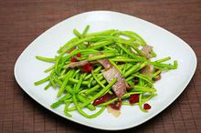
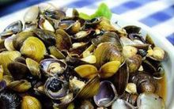
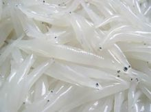
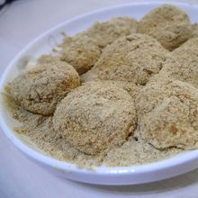

| 藜蒿
|
| 
| 藜蒿，有“鄱阳湖的草、南昌人的宝”之称。鄱阳湖宝库中的天然产物,
茎绿圆润，根白味脆，蛋白质含量48%，富含维生素C、E，无脂肪，并具有治疗高血压、冠心病的功效，是人们食谱上的绿
色美味佳肴，余味犹长，余干从天然采摘转为人工种植，年产量达2000吨。 |
| 黑蚬
|
| 黑蚬，鄱阳湖特产，淡水蚌类，体积小、介壳园形或心脏形，表面有轮状纹。
肉鲜美，营养价值高，属低脂肪、高蛋白食品，产品远销上海、浙江、北京、广东、福建等省，还出口日本及东南亚地区。 |

|
| 鄱阳湖银鱼
|
| 
| 鄱阳湖银鱼，余干产银鱼历史悠久，明朝时列为地方贡品。鄱湖银鱼透明，
头平偏，口大，牙锐，背鳍和脂鳍各1个，晒干后似雪白银条，故名“银鱼”。鄱湖银鱼肉美味鲜，营养丰富，有益脾、润肺、
补肾、去虚、增阳、滋阴等功效，属上等滋养补品。 |
| 麻糍
|
| 打麻糍，是余干农村过春节不可少的一项传统习俗，具有浓浓的乡村风味。
圆圆的麻糍象征着团团圆圆。提前一天晚上浸泡好了糯米滤干水，将甑放到锅里，加适量的水，然后把糯米盛放到木甑里，打上
气孔，盖上膜蒸，蒸熟后，将整甑糯米饭抬到院子里的石臼旁，准备好了木棒和水盆，当然还有盛有白糖的芝麻粉盘子。 |

|